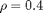
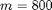
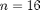
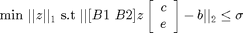

In this example we will see the specificity of the classification problems (801 and 802) and solve one using SPGL1.
Contents
Generating the problem
We generate the problem of the classification of corrupted images (problem 802) with the corruption ration , the doxn-sampling to  coefficients (instead of 168*192=32256) and  images from each of the 8 sets of the training data to form the dictionary.
P = generateProblem('classcorr','n',16,'m',1400,'rho',0.4);
Error using rng (line 96)
The current random number generator is the legacy generator. This is because you have executed a command such as rand('state',0), which activates MATLAB's legacy random number behavior. You may not use RNG to reseed the legacy random number generator.
Use rng('default') to reinitialize the random number generator to its startup configuration, or call RNG using a specific generator type, such as rng(seed,'twister').
Error in sparco.problems.prob802 (line 52)
if ~parm.noseed, rng(0); end
Error in generateProblem (line 108)
[data] = eval(sprintf('prob%03d(varargin{:});',index));
Error in guide_class (line 13)
P = generateProblem('classcorr','n',16,'m',1400,'rho',0.4);
The Dictionary used is a concatenation of the dictionary formed by the training data and the identity matrix to take into account the error created by the corruption :
B = P.B % The full dictionary B1 = B.children{1} % The dictionary from the training data B2 = B.children{2} % The identity matrix
Solving the problem
We solve the complex L1 recovery problem :

spglopts = spgSetParms('optTol',1e-4,'verbosity',3); tau = 0; % Initial one-norm of solution sigma = 9; % Go for a basis pursuit solution z = spgl1(P.A, P.b, tau, sigma, [], spglopts); % Find out from which set the solution is the closest n = (P.B.n-32256) / 8; A = P.A; for i=1:8 idx = ((i-1)*n+1):(i*n); B = A(:,idx); c = z(idx,:); if (i==1) sol.min = norm(P.b-B*c,2); sol.arg = 1; else if norm(P.b-B*c,2) < sol.min sol.min = norm(P.b-B*c,2); sol.arg = i; end end end % Show a face from the real face set and the found set [opts,varg] = sparco.tools.parseDefaultOpts(); figure; subplot(1,3,1); imagesc(reshape(P.signal,192,168)); colormap gray; axis square; title 'Initial face'; subplot(1,3,2); img = imread(sprintf('%sprob80x_%d_01.pgm', opts.datapath, sol.arg)); imagesc(img); title 'Face from recovered set'; colormap gray; axis square; subplot(1,3,3); img = imread(sprintf('%sprob80x_%d_01.pgm', opts.datapath, P.x0)); imagesc(img); title 'Face from real set'; colormap gray; axis square;